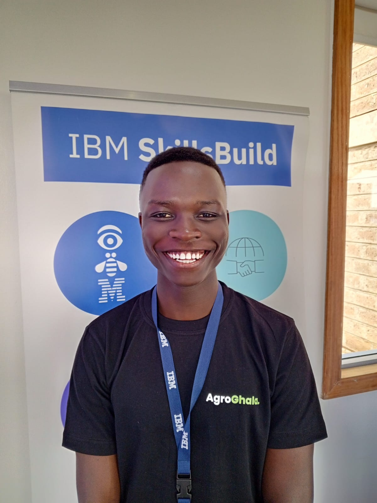

Welcome to Adons, the premier ad repository curated by Rodgers Wisdom, dedicated to preserving over a decade's worth of iconic advertisements.
Our mission is simple yet profound: to reconnect people, especially Gen Zers, with the memories that shaped their cultural landscape.
At Adons, we understand the power of nostalgia – it's a bridge that spans time, connecting us to moments that have shaped who we are today.
With our vast collection of ads spanning more than a decade, we offer a treasure trove of memories waiting to be rediscovered.
Our aim is to provide a platform where users can not only reminisce about the ads of yesteryear but also gain a deeper understanding of their significance.
Through our meticulously curated collection, we strive to evoke emotions, spark conversations, and foster a sense of community among our users.
Whether you're longing for the jingles of your childhood or eager to explore the advertising landscape of years gone by, Adons is your one-stop destination.
Join us as we journey through the annals of advertising history, rekindling memories and forging new connections along the way.At Adons, the past is not just a memory – it's a living, breathing testament to the power of nostalgia.
Come, rediscover the ads that defined an era, and let's make new memories together.
